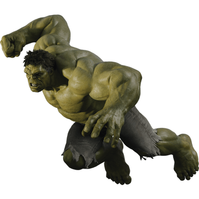

Captain America
{kind=link}
 Captain America is a comic-strip superhero created by writer Joe Simon and artist Jack Kirby for Timely (later Marvel) Comics. The character debuted in March 1941 in Captain America Comics no. 1. The star-spangled super soldier would become one of Marvel’s most iconic and enduring characters.
Captain America is a comic-strip superhero created by writer Joe Simon and artist Jack Kirby for Timely (later Marvel) Comics. The character debuted in March 1941 in Captain America Comics no. 1. The star-spangled super soldier would become one of Marvel’s most iconic and enduring characters.
Incredible Hulk
 A US television series (1978-81) on CBS about a man who sometimes turns into a very powerful creature like a man but with green skin. The character originally appeared in comic books and there is a film Hulk (2003). The Incredible Hulk is Dr David Banner, a scientist who did an experiment that went wrong and who now becomes the creature whenever he gets angry.
Spider-Man
{kind=link}
 a US cartoon, TV, and film character who develops special powers, such as great strength and the ability to cling to surfaces, after being bitten by a radioactive spider.
a US cartoon, TV, and film character who develops special powers, such as great strength and the ability to cling to surfaces, after being bitten by a radioactive spider.